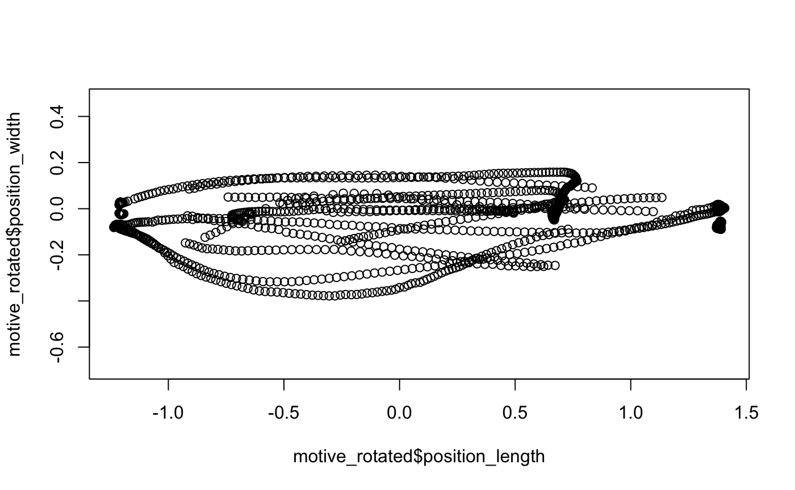
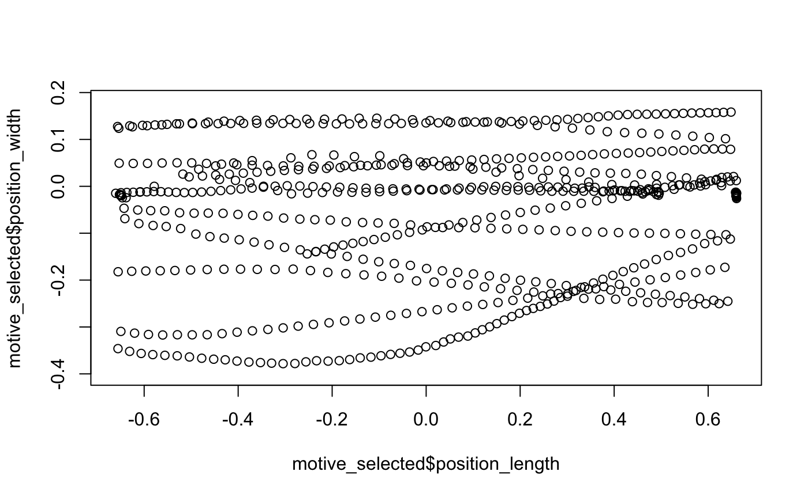
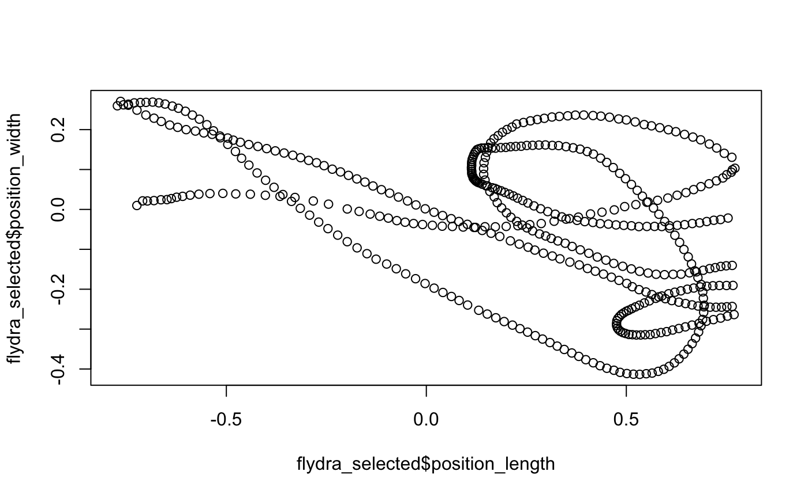
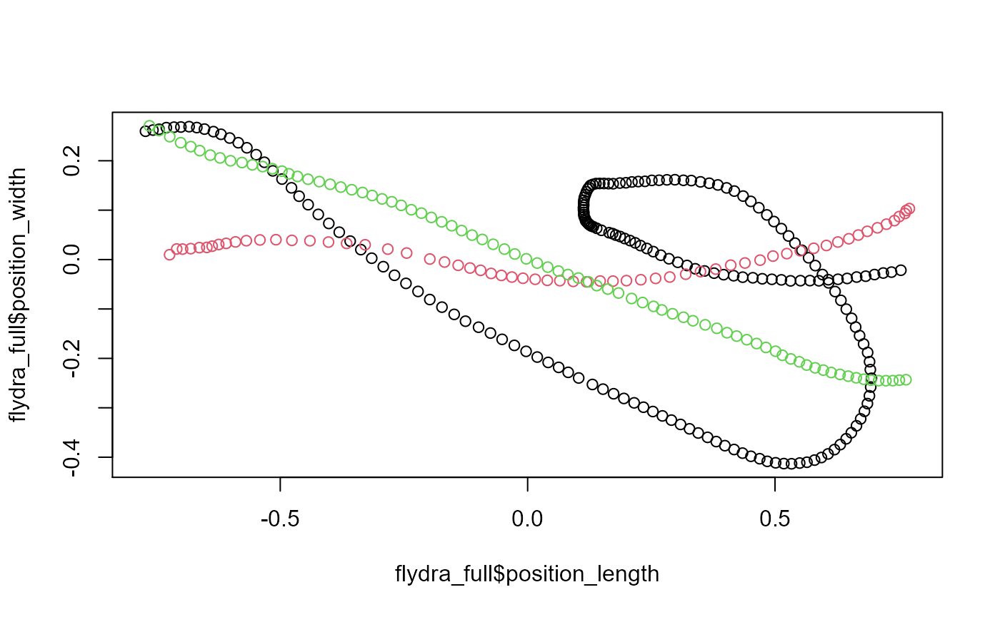
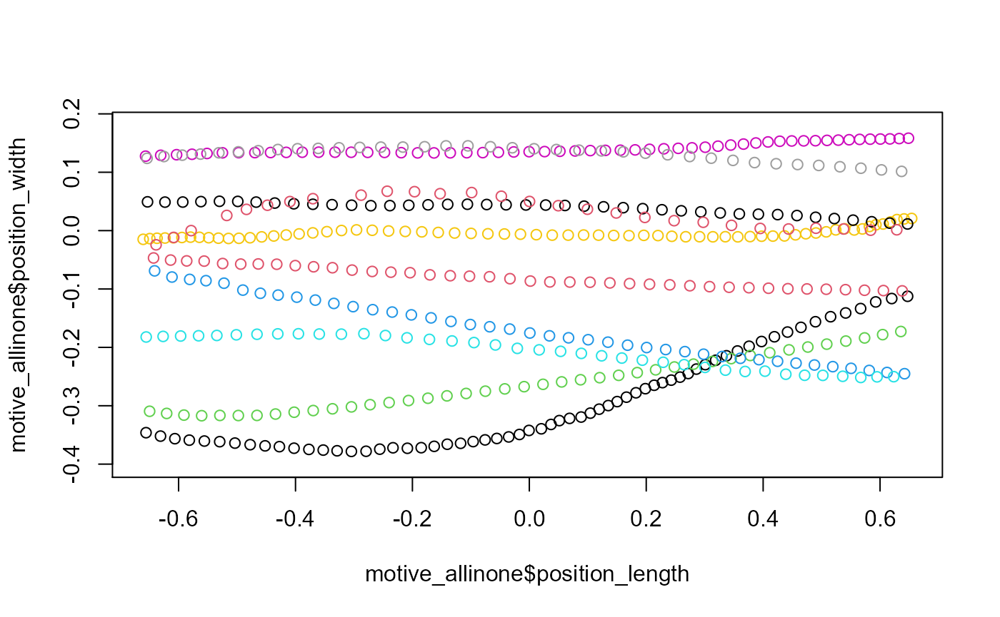

vignettes/data-import-cleaning.Rmd
data-import-cleaning.RmdpathviewR
Our read_ functions presently support .csv files exported from Optitrack’s Motive software as well as .mat files exported from Flydra.
Should you have data from other sources, please see the function as_viewr() and the ACCOMPANYING VIGNETTE (LINK!).
We’ll start by loading pathviewR and tidyverse.
## If you do not already have pathviewR installed: # install.packages("devtools") # devtools::install_github("vbaliga/pathviewR") library(pathviewR) library(tidyverse)
.csv files exported from Motive can be imported via read_motive_csv()
## Import the Motive example data included in ## the package motive_data <- read_motive_csv( system.file("extdata", "pathviewR_motive_example_data.csv", package = 'pathviewR') ) ## This produces a tibble motive_data #> # A tibble: 934 x 26 #> frame time_sec device02_rotati… device02_rotati… device02_rotati… #> <int> <dbl> <dbl> <dbl> <dbl> #> 1 72210 722. 0.135 -0.977 -0.112 #> 2 72211 722. 0.0819 -0.978 -0.0991 #> 3 72212 722. 0.211 -0.973 -0.0939 #> 4 72213 722. 0.196 -0.972 -0.128 #> 5 72214 722. 0.131 -0.975 -0.121 #> 6 72215 722. 0.0935 -0.975 -0.105 #> 7 72216 722. 0.180 -0.975 -0.106 #> 8 72217 722. 0.164 -0.972 -0.149 #> 9 72218 722. 0.120 -0.973 -0.149 #> 10 72219 722. 0.155 -0.970 -0.120 #> # … with 924 more rows, and 21 more variables: device02_rotation_w <dbl>, #> # device02_position_x <dbl>, device02_position_y <dbl>, #> # device02_position_z <dbl>, device02_mean_marker_error <dbl>, #> # device03_rotation_x <dbl>, device03_rotation_y <dbl>, #> # device03_rotation_z <dbl>, device03_rotation_w <dbl>, #> # device03_position_x <dbl>, device03_position_y <dbl>, #> # device03_position_z <dbl>, device03_mean_marker_error <dbl>, #> # device05_rotation_x <dbl>, device05_rotation_y <dbl>, #> # device05_rotation_z <dbl>, device05_rotation_w <dbl>, #> # device05_position_x <dbl>, device05_position_y <dbl>, #> # device05_position_z <dbl>, device05_mean_marker_error <dbl>
Metadata are stored as attributes. We won’t go through all of these, but here are a couple important ones.
## E.g. to see the header of the original file: attr(motive_data, "header") #> metadata value #> 1 Format Version 1.23 #> 2 Take Name sept-18_mixed-group_16-30 #> 3 Take Notes #> 4 Capture Frame Rate 100.000000 #> 5 Export Frame Rate 100.000000 #> 6 Capture Start Time 2019-09-18 04.30.02.695 PM #> 7 Total Frames in Take 190951 #> 8 Total Exported Frames 190951 #> 9 Rotation Type Quaternion #> 10 Length Units Meters #> 11 Coordinate Space Global ## Names of all marked objects: attr(motive_data, "subject_names_simple") #> [1] "device02" "device03" "device05" ## Types of data included attr(motive_data, "data_types_simple") #> [1] "Rigid Body" ## Frame rate attr(motive_data, "frame_rate") #> [1] 100
.mat files exported from Flydra can be imported via read_flydra_mat().
Note that a subject name is required. Only one name can be added and it will be used throughout the resultant tibble.
## Import the Flydra example data included in ## the package flydra_data <- read_flydra_mat( system.file("extdata", "pathviewR_flydra_example_data.mat", package = 'pathviewR'), subject_name = "birdie_wooster" ) ## Similarly, this produces a tibble with important ## metadata as attributes flydra_data #> # A tibble: 7,744 x 6 #> frame[,1] time_sec subject position_length… position_width[… position_height… #> <int> <dbl> <chr> <dbl> <dbl> <dbl> #> 1 746 0 birdie… 0.869 -0.00417 1.31 #> 2 747 0.01 birdie… 0.864 -0.00614 1.31 #> 3 748 0.02 birdie… 0.863 -0.00695 1.31 #> 4 749 0.03 birdie… 0.862 -0.00672 1.31 #> 5 750 0.04 birdie… 0.862 -0.00644 1.31 #> 6 751 0.05 birdie… 0.862 -0.00619 1.31 #> 7 752 0.06 birdie… 0.863 -0.00667 1.31 #> 8 753 0.07 birdie… 0.864 -0.00712 1.31 #> 9 754 0.08 birdie… 0.865 -0.00727 1.31 #> 10 755 0.09 birdie… 0.865 -0.00760 1.31 #> # … with 7,734 more rows
Data exported via either Motive or Flydra are not typically “tidy”. Functions in pathviewR ultimately rely on having tidy data sets that are easily interpreted.
Several functions to clean and wrangle data are available, and we have a suggested pipeline for how these steps should be handled. The rest of this vignette will cover these steps.
All of the steps in the suggested pipeline are also covered by two all-in-one functions: clean_viewr() and import_and_clean_viewr(). See the section at the very end of this vignette for details.
And speaking of pipes, all functions in pathviewR are pipe-friendly. We will detail each step separately, but each of the subsequent steps may be piped, e.g. data %>% relabel_viewr_axes() %>% gather_tunnel_data() etc etc
Axis labels (x, y, z) may be applied in arbitrary ways by software. A user might intuitively think the z axis represents height, but the original software may label it as the y axis instead.
relabel_viewr_axes provides a means to relabel axes with “tunnel_length”, “tunnel_width”, and “tunnel_height”. These axis labels will be expected by subsequent functions, so skipping this step is ill-advised.
motive_relabeled <- motive_data %>% relabel_viewr_axes( tunnel_length = "_z", tunnel_width = "_x", tunnel_height = "_y", real = "_w" ) names(motive_relabeled) #> [1] "frame" "time_sec" #> [3] "device02_rotation_width" "device02_rotation_height" #> [5] "device02_rotation_length" "device02_rotation_real" #> [7] "device02_position_width" "device02_position_height" #> [9] "device02_position_length" "device02_mean_marker_error" #> [11] "device03_rotation_width" "device03_rotation_height" #> [13] "device03_rotation_length" "device03_rotation_real" #> [15] "device03_position_width" "device03_position_height" #> [17] "device03_position_length" "device03_mean_marker_error" #> [19] "device05_rotation_width" "device05_rotation_height" #> [21] "device05_rotation_length" "device05_rotation_real" #> [23] "device05_position_width" "device05_position_height" #> [25] "device05_position_length" "device05_mean_marker_error"
Akin to the behavior of dplyr::gather(), gather_tunnel_data() will take all data from a given session and organize it so that all data of a given type are within one column, i.e. all position lengths are in position_length, as opposed to separate length columns for each rigid body. These column names will be expected by subsequent functions, so skipping this step is also ill-advised.
Use trim_tunnel_outliers() to remove artifacts and other outlier data. This step is entirely optional, and should only be used when the user is confident that data outside certain ranges are artifacts or other bugs. Data outside these ranges are then filtered out. Best to plot data beforehand and check!!
## First gather and show the new column names motive_gathered <- motive_relabeled %>% gather_tunnel_data() names(motive_gathered) #> [1] "frame" "time_sec" "subject" #> [4] "position_length" "position_width" "position_height" #> [7] "rotation_length" "rotation_width" "rotation_height" #> [10] "rotation_real" "mean_marker_error" ## Now trim, using ranges we know to safely include data ## and exclude artifacts. Anything outside these ranges ## will be removed. motive_trimmed <- motive_gathered %>% trim_tunnel_outliers( lengths_min = 0, lengths_max = 3, widths_min = -0.4, widths_max = 0.8, heights_min = -0.2, heights_max = 0.5 )
The coordinate system of the tunnel itself may require adjustment or standardization. For example, data collected across different days may show slight differences in coordinate systems if calibration equipment was not used in identical ways. Moreover, the user may want to redefine how the coordinate system itself is defined (i.e. change the location of (0, 0, 0) to another place within the tunnel.
Note that having (0, 0, 0) set to the center of the tunnel is required for all subsequent pathviewR functions to work.
pathviewR offers three main choices for such standardization:
redefine_tunnel_center(): Sets the location of 0 on any or all axes to a new location. See the Help page for this function to see the four different methods by which a user can specify this. No rotation of the tunnel is performed.
standardize_tunnel(): Use specified landmarks (subjects within the viewr object) to rotate and translate the location of a tunnel, setting (0, 0, 0) to the center of the tunnel (centering).
rotate_tunnel: Rotate and center a tunnel based on user-defined coordinates (i.e. similar to standardize_tunnel() but for cases where specified landmarks are not in the data).
Two quick examples will follow, using our motive and Flydra data:
## Rotate and center the motive data set: motive_rotated <- motive_trimmed %>% rotate_tunnel( perch1_len_min = -0.06, perch1_len_max = 0.06, perch2_len_min = 2.48, perch2_len_max = 2.6, perch1_wid_min = 0.09, perch1_wid_max = 0.31, perch2_wid_min = 0.13, perch2_wid_max = 0.35 )
In the above, virtual perches are defined by the user using the arguments shown. The center of each perch is then found and then the locations of the two perch centers are then used to 1) set (0, 0, 0) to the point that is equidistant from the perches (i.e. the middle of the tunnel) and 2) rotate the tunnel about the height axis so that both perch width coordinates are at 0. This may be easier to understand through plotting:
## Quick (base-R) plot of the original data plot(motive_trimmed$position_length, motive_trimmed$position_width, asp = 1)
## Quick (base-R) plot of the rotated data plot(motive_rotated$position_length, motive_rotated$position_width, asp = 1)

Differences due to rotation may be extremely subtle, but the redefining of (0, 0, 0) to the middle of the tunnel should be clear from contrasting the axes of the plots.
Flydra data typically do not need to be rotated, so we will instead use redfine_tunnel_center() to adjust the location of (0, 0, 0):
## Re-center the Flydra data set: flydra_centered <- flydra_data %>% redefine_tunnel_center(length_method = "middle", height_method = "user-defined", height_zero = 1.44)
Here, we are using length_method = "middle" to use the middle of the range of “length” data to set length = 0 (a translation), making no change to the width axis, and then specifying that height = 0 should be equal to the value 1.44 from the original data (another translation). Again, plotting may help; note that this time, we’ll plot length x height (instead of width):
## Quick (base-R) plot of the original data plot(flydra_data$position_length, flydra_data$position_height, asp = 1)
## Quick (base-R) plot of the redefined data plot(flydra_centered$position_length, flydra_centered$position_height, asp = 1)
This required step has benefits that are twofold: 1) treatment effects on animal movement may only manifest over certain regions of the tunnel, and 2) focusing on a subset of the data makes it easier to define explicit trajectories and run computations faster.
The region of interest is defined via the function select_x_percent(). Once tunnel coordinates have been standardized (via one of the function in the previous section), select_x_percent() then selects the middle x percent (along the length axis) of the tunnel as the region of interest. For example, selecting 50 percent would start from the center of the tunnel and move 25% of the tunnel along positive length and 25% along negative length values to then select the middle 50% of the tunnel.
Quick examples:
## Motive data: select the middle 50% of the tunnel as the region of interest motive_selected <- motive_rotated %>% select_x_percent(50) ## Quick plot: plot(motive_selected$position_length, motive_selected$position_width, asp = 1)

## Flydra data: flydra_selected <- flydra_centered %>% select_x_percent(50) ## Quick plot: plot(flydra_selected$position_length, flydra_selected$position_width, asp = 1)

The pathviewR standard for defining a trajectory is: continuous movement from one side of the tunnel to the other over the span of the region of interest. Note that this definition does not strictly require linear movement from one end to the other; an animal could make several loops inside the region of interest within a given trajectory.
Isolating trajectories is handled via the separate_trajectories() function in pathviewR. Note that a region of interest must be selected beforehand via select_x_percent().
Because cameras may occasionally drop frames, we allow the user to permit some relaxation of how stringent the “continuous movement” criterion is. This is handled via the max_frame_gap argument within separate_trajectories(). For more details, please see VIGNETTE XXX (LINK HERE).
In our Motive example, we’ll use the automated feature built into the function to guesstimate the best max_frame_gap allowed. When frame gaps larger than max_frame_gap are encountered, the function will force the defining of a new trajectory. But if frame gaps smaller than max_frame_gap are encountered, keeping observations within the same trajectory is permitted.
In the Flydra example, we’ll simply set max_frame_gap to 1 so that no frame gaps are allowed (movement must be continuous with no dropped frames).
motive_labeled <- motive_selected %>% separate_trajectories(max_frame_gap = "autodetect") #> autodetect is an experimental feature -- please report issues. flydra_labeled <- flydra_selected %>% separate_trajectories(max_frame_gap = 1)
Now that trajectories have been isolated and labeled, the final cleaning step is to retain only the trajectories that completely span from one end of the region of interest to the other.
This final step is handled via pathviewR’s get_full_trajectories().
There is a built-in “fuzziness” feature: because trajectories may not have observations exactly at the beginning or the end of the region of interest, it may be necessary to allow trajectories to be slightly shorter than the range of the selected region of interest. The span parameter of this function handles this. By supplying a numeric proportion from 0 to 1, a user may allow trajectories to span that proportion of the selected region. For example, setting span = 0.95 will keep all trajectories that span 95% of the length of the selected region of interest. Setting span = 1 (not recommended) will strictly keep trajectories that start and end at the exact cut-offs of the selected region of interest.
For these reasons, spans of 0.99 to 0.95 are generally recommended. The best choice ultimately depends on your capture frame rate as well as your own judgment. Should you desire to set it lower (which you can), you may instead consider using a smaller region of interest (i.e. set the desired_percent parameter in select_x_percent() to be lower).
## Motive motive_full <- motive_labeled %>% get_full_trajectories(span = 0.95) plot(motive_full$position_length, motive_full$position_width, asp = 1, col = as.factor(motive_full$file_sub_traj))
## Flydra flydra_full <- flydra_labeled %>% get_full_trajectories(span = 0.95) plot(flydra_full$position_length, flydra_full$position_width, asp = 1, col = as.factor(flydra_full$file_sub_traj))

All of the above steps can also be done by using pathviewR’s designated all-in-one functions. import_and_clean_viewr() imports raw data and allows the user to run through all of the cleaning steps previously covered in this vignette. clean_viewr() does the same on any object already imported into the R environment (i.e. it skips data import).
For both of these functions, all of the cleaning steps are set to TRUE by default, but may be turned off by using FALSE. Argument names correspond to standalone functions in pathviewR, and if the user wants to use non-default values for corresponding arguments, they should also be supplied for any steps that are set to TRUE.
For example, if the user keeps select_x_percent = TRUE as an argument in clean_viewr(), the select_x_percent() function is run internally. This means that should the user desire to select a region of interest that does not match the default value of 33 percent, an additional argument should be supplied to clean_viewr() as if it were being supplied to select_x_percent() itself, e.g.: desired_percent = 50.
All additional arguments should be written out fully and explicitly.
Here’s an example using what we previously covered:
motive_allinone <- motive_data %>% clean_viewr( relabel_viewr_axes = TRUE, gather_tunnel_data = TRUE, trim_tunnel_outliers = TRUE, standardization_option = "rotate_tunnel", select_x_percent = TRUE, desired_percent = 50, rename_viewr_characters = FALSE, separate_trajectories = TRUE, max_frame_gap = "autodetect", get_full_trajectories = TRUE, span = 0.95 ) #> autodetect is an experimental feature -- please report issues. ## Quick plot plot(motive_allinone$position_length, motive_allinone$position_width, asp = 1, col = as.factor(motive_allinone$file_sub_traj))

That’s all!
🐢